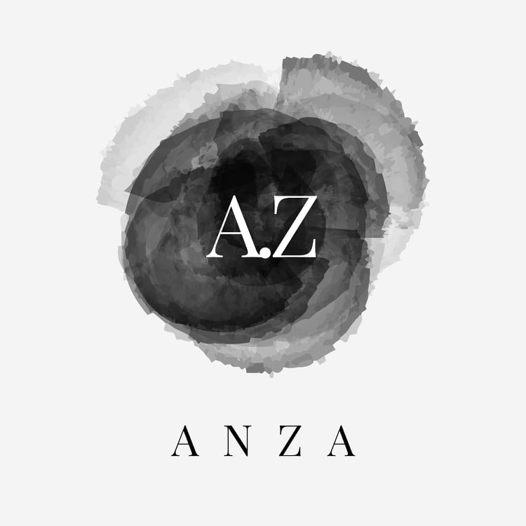

<main>
    <section class="custom-row">
        <aside class="user-main-sign left">
            <ul class="nav justify-content-start">
                <li class="nav-item">
                    <a class="nav-link" routerLinkActive="custom-active" routerLink="in">Sign In</a>
                </li>
                <li class="nav-item">
                    <a class="nav-link" routerLinkActive="custom-active" routerLink="up">Sign Up</a>
                </li>
            </ul>
            <router-outlet></router-outlet>
        </aside>
        <aside class="right">
            
        </aside>
    </section>
</main>